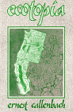

Dean Alger
Megamedia : How Giant Corporations
Dominate Mass Media, Distort Competition, and Endanger
DemocracyLink to Amazon
Ernest Callenbach
The Web of Life: A New Understanding
of Living
Systems
Link to Amazon
Fritjof Capra
Charles Derber
David C. Korten
Frances Moore Lappe
The Quickening of America: Rebuilding
Our Nation, Remaking Our Lives
Link to Amazon
Robert W. McChesney
Rich Media, Poor Democracy:
Communication Politics in Dubious Times
Link to Amazon
James Grier Miller
Noam Chomsky & Robert W. McChesney
Kirkpatrick Sale
Margaret Wheatley
Elliott Sober & David Sloan Wilson
Unto Others : The Evolution and
Psychology of Unselfish
BehaviorLink to Amazon